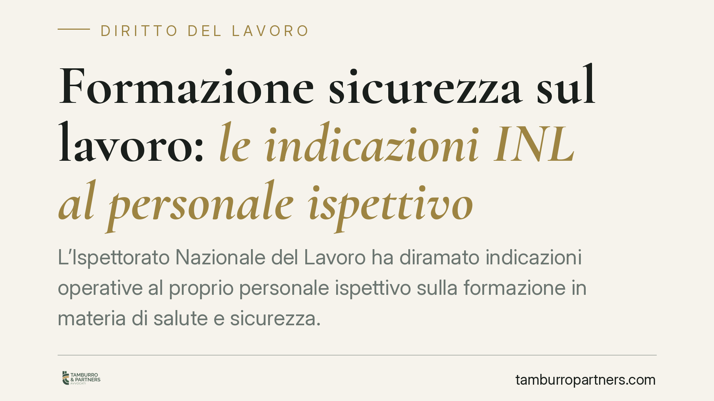

Formazione sicurezza sul lavoro: le indicazioni INL al personale ispettivo
L'Ispettorato Nazionale del Lavoro ha diramato indicazioni operative al proprio personale ispettivo sulla formazione in materia di salute e sicurezza. L'obiettivo è uniformare i criteri di verifica degli obblighi previsti dall'art. 37 del D.lgs. 81/2008. Per i datori di lavoro significa controlli più prevedibili, ma anche meno margini di improvvisazione sulla documentazione formativa.

Il contesto
La formazione dei lavoratori in materia di salute e sicurezza è uno degli obblighi più controllati in sede ispettiva. Non riguarda solo la frequenza di un corso: investe contenuti, durata, aggiornamento e, soprattutto, la prova documentale di tutto questo.
Con le nuove indicazioni al personale ispettivo, l'INL punta a ridurre le disomogeneità applicative sul territorio. In pratica, vuole che ispettori di sedi diverse valutino allo stesso modo situazioni identiche. Per le imprese è una buona notizia in termini di certezza, ma alza l'asticella del rigore richiesto.
Inquadramento normativo
Il riferimento è l'art. 37 del D.lgs. 81/2008 (Testo Unico sulla salute e sicurezza sul lavoro). La norma impone al datore di lavoro di assicurare a ciascun lavoratore una formazione "sufficiente ed adeguata" in materia di sicurezza, con specifico riferimento ai rischi legati alla mansione svolta.
La durata, i contenuti minimi e le modalità della formazione sono stati definiti dagli Accordi Stato-Regioni, che integrano la disciplina del Testo Unico. La formazione va erogata all'assunzione, in caso di cambio mansione o di introduzione di nuove attrezzature e tecnologie, e deve essere periodicamente aggiornata.
Un punto spesso trascurato: la formazione (art. 37) è cosa diversa dall'informazione (art. 36) e dall'addestramento. L'addestramento, in particolare, deve essere effettuato da persona esperta e sul luogo di lavoro, e va tracciato in modo autonomo. Confondere questi piani è un errore ricorrente in sede di verifica.
Perché queste indicazioni contano
Il personale ispettivo, applicando criteri uniformi, concentrerà l'attenzione su alcuni elementi ricorrenti: l'effettiva erogazione della formazione (non solo la sua formale previsione), la coerenza tra mansione svolta e contenuti del corso, il rispetto delle durate minime e la tracciabilità.
La conseguenza pratica è che non basta esibire un attestato. L'ispettore può verificare se la formazione è stata realmente adeguata al rischio specifico e se è aggiornata. Una formazione generica, erogata "a catalogo" senza relazione con le mansioni reali, può essere contestata anche in presenza di un attestato formalmente valido.
Rilevano poi gli aspetti formali della documentazione: registri delle presenze, qualifica dei docenti, verifica dell'apprendimento. Carenze su questi profili espongono a sanzioni e, nei casi più gravi, incidono sulla valutazione della responsabilità in caso di infortunio.
Implicazioni per i datori di lavoro
Il datore di lavoro resta il soggetto su cui grava l'obbligo e la relativa responsabilità. La delega di funzioni può spostare alcuni adempimenti, ma non elimina l'onere di vigilanza.
Chi ha organizzato la formazione anni fa e non l'ha più aggiornata è particolarmente esposto. Lo stesso vale per le aziende con elevato turnover, dove è facile che nuovi assunti o lavoratori riqualificati sfuggano al percorso formativo. Anche la formazione erogata in modalità e-learning, dove ammessa, richiede attenzione ai limiti previsti dalla normativa.
Cosa fare in concreto
- Verificate la mappatura: controllate che ogni lavoratore abbia ricevuto la formazione corrispondente alla mansione effettivamente svolta, non a quella formalmente indicata in contratto.
- Controllate le scadenze: individuate gli aggiornamenti in scadenza e programmateli con anticipo, evitando ritardi contestabili in sede ispettiva.
- Ordinate la documentazione: conservate attestati, registri presenze, qualifica dei formatori e prova della verifica dell'apprendimento in un archivio ordinato e immediatamente reperibile.
- Distinguete formazione e addestramento: tracciate separatamente l'addestramento pratico, quando richiesto dalle mansioni, documentando chi lo ha erogato e come.
- Allineate la formazione al DVR: assicuratevi che i contenuti formativi siano coerenti con i rischi indicati nel Documento di Valutazione dei Rischi.
Consigliamo un audit periodico della documentazione formativa, meglio se condotto prima di un eventuale accesso ispettivo. Intervenire in anticipo è quasi sempre meno oneroso che rispondere a una contestazione.
Disclaimer
Contributo informativo a cura di Tamburro & Partners - Avv. Giuseppe Tamburro. Non costituisce parere legale.
Ogni storia di lavoro ha i suoi tempi.
Se gestisci HR e vuoi un confronto su contenzioso, ispezioni o licenziamenti, scrivi allo studio. Ti rispondiamo entro un giorno lavorativo.